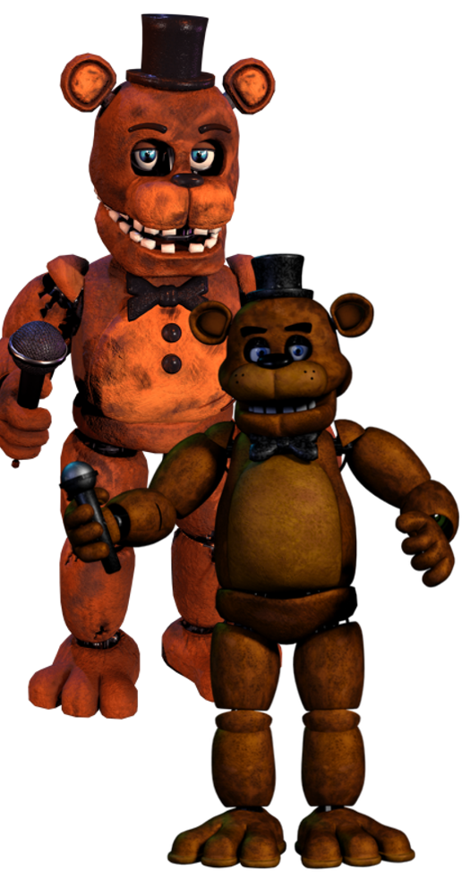

Freddy est l'animatronique mascotte de la franchise créée par William Afton, car son nom est retrouvé dans quasiment tous les noms des pizzerias suivantes. C’est notamment l'animatronique possédant le plus de variations jusqu'à aujourd'hui.
Cependant, derrière cette animatronique fait de circuits et de métal se trouve le corps et l'âme d’un enfant nommé Gabriel. Cette information participe à l’histoire cachée du jeu. Gabriel fait partie des âmes d'enfants qui ont été piégées dans les animatroniques après avoir été victimes de meurtres perpétrés par le Purple Guy (William Afton).
Selon les théories et révélations progressives dans la série, Gabriel était l'une des victimes de William Afton. Son âme a été piégée dans le corps de l'animatronique Freddy Fazbear, ce qui explique pourquoi Freddy se comporte de manière si menaçante et qu’il soit animé par des intentions sombres. Gabriel, en tant qu'âme piégée, incarne ainsi la tragédie et la vengeance des enfants qui cherchent à se libérer de leur prison animatronique.
Malheureusement, l’histoire de Gabriel n’est pas pleinement détaillée dans les jeux, mais il est suggéré que son âme souffre et cherche à comprendre ce qui lui est arrivé. Certaines théories expliquent le comportement de Freddy, d'intervenir en dernier, car il aurait été la dernière victime de William Afton.
Ces évènement donne une dimension tragique au personnage de Freddy, ce qui montre qu’il n'est pas simplement un tueur mécanique, mais aussi un enfant emprisonné dans un cycle de souffrance et de vengeance.
Golden Freddy est l'un des animatroniques les plus mystérieux et effrayants de la franchise. Sa présence est souvent associée à des phénomènes paranormaux. Il est connecté aux événements tragiques.
Effectivement, Golden Freddy n’a pas fait exception à la règle car il a été lui aussi victime du massacre causé par William Afton.
L’âme possédant Golden Freddy se nomme Cassidy, mais certaines théories disent que The Crying Child serait également dans Golden Freddy, bien que cela n’ait jamais été confirmé.
Certaines suggestions place Golden Freddy comme une version hantée de Freddy, mais ce qui est sûr, c’est qu’il est une manifestation de la vengeance de Cassidy.
Cassidy serait l’une des âmes les plus tourmentées à cause de sa mort faisant partie d’une des plus atroce.
Cassidy aurait été démembrée ce qui expliquerait pourquoi elle possède un animatronique sans endosquelette et pourquoi elle a un comportement aussi erratique et inquiétant.

Toy Freddy est l’animatronique principale des Toy. Il apparaît pour la première fois dans FNAF 2.
Nous ne savons pas grand-chose sur lui mais ce qui est sûr, c’est que Toy Freddy a été créé pour remplacer Freddy Fazbear dans la nouvelle pizzeria. Il a été créé avec une fonctionnalité permettant de protéger les clients et employés. Cependant, la nuit, il devient dangereux...
Il ne possède aucune histoire d'âme, le possédant mais il n’y a qu'une raison pour expliquer son comportement la nuit. Dans le lore du jeu, quelqu’un s’est introduit dans la pizzeria pour trafiquer le système de reconnaissance faciale des Toys, ce qui a engendré leur destruction plus tard avant que les restes de Toy Freddy ne soit retrouvé dans FNAF 3.
Shadow Freddy est une entité plus que mystérieuse car on a très peu d’informations à son sujet. Il apparaît pour la première fois dans FNAF 2, cependant il est très compliqué de le voir car il y a une chance sur 200 de le voir apparaître dans l’une des caméras.
Shadow Freddy a une apparence proche de Golden Freddy malgré le fait qu’il soit davantage plus sombre et de couleur violette. Il possède des dents blanches les faisant briller, mais également de grosses pupilles blanches qui sont tout aussi brillantes.


Phanthom Freddy apparaît pour la première fois dans FNAF 3. Il est la manifestation de Freddy (Withered Freddy de FNAF 2) en tant qu'hallucination, c'est pour cela qu’il ressemble beaucoup à Freddy Fazbear.
Son oreille gauche est manquante et plusieurs fils ressortent de son orbite droite. Malgré cela et son aspect brûlé, son microphone a réussi à rester dans un bon état.
Phantom Freddy apparaît dans le couloir frontal. Cette position n’est pas anodine. Comme Phantom Freddy est une manifestation de Freddy, il apparait donc proche des restes de Freddy Fazbear.
Nightmare Freddy est une version cauchemardesque de Freddy et il fait sa première apparition dans FNAF 4.
Son apparence est plutôt effrayante notamment à cause de son costume excessivement abîmé, des griffes et des dents acérées et ensanglantées. Il possède une corpulence légèrement plus imposante que Freddy.
Il est très souvent accompagné de petites créatures le ressemblant, elles sont nommées les Freddies. Cependant, les 3 Freddles sont distinguables car elles possèdent des déchirures à des endroits différents. Ces petites créatures viendront de temps en temps se jeter sur le lit du joueur. S'ils ne sont pas stoppés, Freddy se chargera de tuer le joueur.


Nightmare apparaît dans FNAF 4 et il fait donc partie des animatroniques cauchemardesques. Il ressemble beaucoup à Nightmare Fredbear mais dans des tons de couleur très sombre se rapprochant du noir. Son costume est translucide, laissant paraître son endosquelette.
Il est actif principalement à la nuit 7 et 8 à partir de 4h du matin. Son arrivée fait disparaître tous les autres animatroniques faisant de lui la seule menace. Même s'il est la seule menace de la nuit, cela ne veut pas dire que c’est simple car Nightmare est une animatronique dangereux et surtout très rapide faisant de lui une menace compliquée à esquiver, les bruits qu’il fera en se déplaçant seront compliqués à percevoir et la lumière sera plus souvent notre ennemi pour le battre.
Nightmare Fredbear est la version cauchemardesque de Fredbear, il apparait pour la première fois dans FNAF 4.
Son apparence est d’un doré excessivement abîmé, avec des taches brunes disséminées sur plusieurs parties de son corps. Il possède également une très grande bouche avec de longues dents pointues, qui sont remplies de sang, ce qui rappelle la mort brutale du protagoniste.
Nightmare Fredbear est actif pendant l'entièreté de la Nuit 5, et au cours de la Nuit 6 à partir de 4h du matin. Sa présence retire également les autres animatroniques comme son compère Nightmare.


Fredbear est l’un des 2 premiers animés de la franchise ayant apparu dans la pizzeria Fredbear’s Family Dinner. Il a été supposément le premier animatronique construit par Henry Emily.
Un incident s’est déroulé en 1983 ou le « Crying Child » s’est fait écraser le lobe frontal après que son frère Micheal Afton les mit dans la machoire de Fredbear. Cet incident a été la goutte qui a fait que le restaurant a fermé ses portes. Suite à cela, Fredbear ne sera plus jamais revu.
Funtime Freddy est un animatronique funtime ayant fait sa première apparition dans Five Nights at Freddy's: Sister Location.
Il est une version circassienne de Freddy Fazbear construite par Afton Robotics, à une date inconnue pour un restaurant répondant au nom de Circus Baby's Pizza World. Après la fermeture du restaurant, il a été transporté quelques semaines plus tard dans un lieu souterrain. Là, les animatroniques de ce sous-sol mirent en place un plan consistant à fusionner entre elles pour utiliser le corps d'un technicien comme déguisement et ainsi s'échapper de l'installation. Ce plan fut un succès jusqu'à ce que l'hôte recracha dans les égouts ce qui restait de la fusion des animatroniques.


Lefty est une animatronique rockstar qui a fait sa première apparition dans Freddy Fazbear's Pizzeria Simulator. L'apparence générale de Lefty est identique à celle de Rockstar Freddy, mais avec des couleurs différentes.
Il fut conçu spécialement pour localiser et capturer le personnage de Marionette. À première vue, il se comporte d'une manière tendre face au gardien de sécurité. Il commence habituellement ses lignes par un chuchotement avant de murmurer doucement et calmement ses phrases. Lefty, n'ayant été conçu que pour emprisonner Marionette, ces attributs de personnalité appartiennent à l'esprit possédant Marionette, Lefty lui-même n'ayant pas de personnalité propre.
Molten Freddy est composé des restes de Ennard suite à Sister Location. Dans cette version de Ennard, il ne reste plus que Funtime Freddy, Ballora, Funtime Foxy et Bon-Bon. Molten Freddy est principalement contrôlé par Funtime Freddy, c’est l’une des raisons pour laquelle il se nomme Molten Freddy.
Il apparait pour la première fois dans le jeu Pizzeria Simulator, faisant de lui l’un des principaux antagonistes.
Molten Freddy est un animatronique excentrique et sadique, faisant de lui un peu plus tordu et moins sain que tous les autres. Malgré tout ça, il garde toujours un personnage énergétique, même quand il tue le joueur.

Glamrock Freddy fait partie des Glamrock et il apparait pour la première fois dans FNAF Security Breach. Contrairement aux autres variations de Freddy, Glamrock Freddy est le seul animatronique ne voulant aucun mal à notre protagoniste, voulant même l’aider et le protéger jusqu’au lendemain.
Il est le chanteur du groupe formé avec les autres Glamrock. Freddy rencontrera Gregory après un dysfonctionnement lors d’un show causant le « mode sécurité » pendant tout le jeu.
Une théorie tourne sur Glamrock Freddy à propos qu’il serait possédé par une âme, et pas n’importe quelle âme... celle de Michael Afton.
Cette théorie s’appuie sur le fait que seulement lui lutte contre le contrôle de BurnTrap, qu’il fait tout pour pouvoir protéger un enfant, et notamment qu’il connaît le lieu se trouvant sous le Pizzaplex en disant qu’il y est déjà allé. Malheureusement, cette théorie n’est pas confirmée par Scott, mais le sera peut-être un jour sous un sous-entendu ou peut-être dans les futurs jeux de la franchise.
Yenndo est un animatronique de Five Nights at Freddy's: Sister Location, qui est une version désactivée et partiellement déformée. Contrairement aux autres animatroniques du jeu, Yenndo n'a pas de costume, ce qui le rend très perturbant.
Il n’est pas vraiment un ennemi dans le sens traditionnel, car il faut être très chanceux pour le voir apparaître. Si vous êtes un de ces joueurs chanceux, il apparaîtra à la nuit 3 à la place de Funtime Foxy.


Rockstar Freddy est un animatronique de Five Nights at Freddy's: Pizzeria Simulator, et il fait partie de la série "Rockstar". Il est une version mise à jour de Freddy Fazbear, plus imposante et colorée, avec un design qui rappelle les vieux animatroniques des premiers jeux.
Rockstar Freddy possède une personnalité plus décontractée et excentrique, et il se distingue par ses accessoires comme son chapeau à paillettes et son sourire éclatant. Bien que son apparence soit amicale, il est tout de même un personnage potentiellement dangereux, prêt à attaquer si ses règles ne sont pas suivies.
Black Ice Frostbear est une version plus sombre et inquiétante de Freddy Frostbear, apparue dans Five Nights at Freddy's: Special Delivery. Ce personnage porte une couleur noire et bleutée, évoquant des températures glaciales et l’aspect menaçant de la glace.
Contrairement à la version festive de Freddy Frostbear, Black Ice Frostbear possède une aura plus sinistre et semble beaucoup plus froid et impitoyable. Cette version du personnage n’est pas canon au lore.


The Blob est une entité étrange et grotesque apparue dans Five Nights at Freddy's: Security Breach. C'est une créature massive et informe qui semble être une sorte de patchwork d'animatroniques et de parties humaines, fusionnées dans un ensemble informe et terrifiant.
The Blob est un symbole de la corruption et de la dégradation dans l'univers de FNAF, une créature qui incarne l'abomination née de la combinaison de différentes entités et du chaos. Il constitue une menace majeure dans l’histoire de Security Breach, cependant il sera inoffensif envers les autres animatroniques, mais plus particulièrement Glamrock Freddy.
Freddy Frostbear est une version hivernale et festive de Freddy Fazbear, apparue dans les événements saisonniers de Five Nights at Freddy's: Help Wanted et Special Delivery. Ce personnage a un design inspiré de l'hiver et des fêtes de Noël, avec une fourrure givrée et des détails gelés. Il porte un chapeau de Noël et est souvent accompagné d’une atmosphère glaciale.
Bien que son apparence soit plus douce et festive, Freddy Frostbear reste un animatronique avec des intentions potentiellement dangereuses, à l'instar des autres personnages de la série. Cette version du personnage n’est pas canon au lore.


Shamrock Freddy est un personnage d'événement spécial introduit dans Five Nights at Freddy's: Special Delivery. Ce Freddy est inspiré de la Saint-Patrick, arborant un look vert et doré, avec des trèfles décorant son corps. Il représente l'esprit de la fête, mais comme d’autres animatroniques festifs, il cache une menace sous son apparence joyeuse.
Shamrock Freddy incarne le mélange habituel de la série FNAF entre des thèmes de célébration et des dangers imminents, et il est un ajout saisonnier qui renforce la variété des animatroniques disponibles dans le jeu. Cette version du personnage n’est pas canon au lore.
VR Toy Freddy est une version virtuelle de Toy Freddy, apparue dans Five Nights at Freddy's: Help Wanted. Ce personnage fait partie du groupe des animatroniques Toy, mais avec un design optimisé pour un univers de réalité virtuelle. Il arbore des couleurs vives et un style plus moderne, correspondant à l'apparence des jeux de réalité virtuelle dans le monde de FNAF.
Bien que son design soit plus technologique et lisse, il reste fidèle à l'esprit de la série avec des comportements menaçants. VR Toy Freddy, tout comme ses homologues, menace l'expérience du joueur, même dans un environnement virtuel. Cette version du personnage n’est pas canon au lore.


Dreadbear est un animatronique introduit dans Five Nights at Freddy's: Help Wanted, et il fait partie de l’événement spécial d’Halloween du jeu. Ce personnage est une version monstrueuse de l’ours, conçu avec un design inspiré des films d'horreur classiques.
Il a une apparence imposante et sinistre, avec des éléments de créature et de zombie. Dreadbear est un personnage particulièrement effrayant, qui s'inscrit dans les thèmes d'horreur et de terreur de la série FNAF, combinant des éléments de la monstruosité et du mystère.
VR Toy Freddy est une version virtuelle de Toy Freddy, apparue dans Five Nights at Freddy's: Help Wanted. Ce personnage fait partie du groupe des animatroniques Toy, mais avec un design optimisé pour un univers de réalité virtuelle. Il arbore des couleurs vives et un style plus moderne, correspondant à l'apparence des jeux de réalité virtuelle dans le monde de FNAF.
Bien que son design soit plus technologique et lisse, il reste fidèle à l'esprit de la série avec des comportements menaçants. VR Toy Freddy, tout comme ses homologues, menace l'expérience du joueur, même dans un environnement virtuel. Cette version du personnage n’est pas canon au lore.


Ignited Golden Freddy représente une version brûlée et dévastée de Golden Freddy, l'un des animatroniques les plus mystérieux et perturbants. Cette version incarne l’aspect surnaturel et apocalyptique de The Joy of Creation, avec une défiguration par les flammes et des mouvements plus erratiques.
Tout comme les autres versions Ignited, Golden Freddy devient un être encore plus effrayant, imprévisible et hanté, avec une aura menaçante qui s’ajoute à sa réputation d'animatronique maléfique.